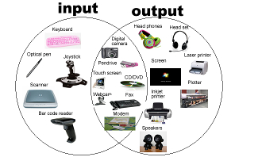

Inleiding
Op deze pagina word de werking van de omputer uitgelegd.
Dat wordt gedaan door het uitleggen van: invoer (input), verwerking (processing), uitvoer (output) en opslag (storage).
1. De invoer (input)
De invoer is het eerste fase van de werking van de computer.
De invoer is het proces waarbij gegevens en instructies van de buitenwereld naar de computer worden gebracht.
Dit gebeurt via allerlei verschillende invoerapparaten (toetsenborden, muizen, aanraakschermen, microfoon, camera's, sensoren en noem het maar op)
De gegevens die via deze apparaten worden verzameld worden omgezet in een vorm die de computer kan begrijpen en verwerken.
Bijvoorbeeld: wanneer je op een toets op het toetsenbord drukt wordt de toetsindrukking omgezet in tekens die de computer kan herkennen.
2. De verwerking (processing)
Nadat de invoer is verzameld wordt deze naar de centrale verwerkingseenheid (CPU) gestuurd, het 'brein' van de computer.
De CPU is verantwoordelijk voor het uitvoeren van berekeningen, het nemen van beslissingen en het uitvoeren van instructies van softwareprogamma's.
Het veranderen van gegevens, het uitvoeren van wiskundige bewerkingen, het vergelijken van waarden, enzovoorts.
Tijdens dit proces wordt de invoer bekeken en worden de vereiste taken uitgevoerd.
3. De uitvoer (output)
Nadat de verwerking is voltooid, levert de computer resultaten in de vorm van uitvoer.
Uitvoer kan verschillende activiteiten aanemen (zoals afbeeldingen, geluid, tekst, video en zelfs fysieke acties) afhankelijk van de functie van de taak.
De uitvoer wordt weergegeven op uitvoerapparaten (zoals luidsprekers, beeldschermen, printers, motoren enzovoorts).
Bijvoorbeeld: wanneer je een document afdrukt, ontwikkeld de computer tekst- en afbeeldigsgegevens die door de printer worden gebruikt om het document op papier af te drukken.

Heeft u behoefte aan een uitlegvideo over input, processing en output? kijk dan de video hieronder.
Extra uitleg? klink op de link!
4. De opslag (storage)
Naast het verwerken van gegevens moet een computer informatie kunnen bewaren zodat je het in de toekomst nog kunt gebruiken of terugvinden.
Dit wordt gedaan door gegevens op te slaan in verschillende soorten opslagmedia (zoals harde schijven, solid-state drives (SSD's), flashdrives enzovoorts)
Deze opslagmedia behouden gegevens altijd, zelfs wanneer de computer niet aan staat maar is uitgeschakeld.
Dit zorgt ervoor dat de computer in staat is om programma's, documenten, afbeeldingen, video's en andere gegevens tevoorschijn te halen en opnieuw te gebruiken wanneer dat nodig is.
Het proces van invoer, verwerking, uitvoer en opslag (input, processing, output en storage) vormt de basis voor alle computeractiviteiten.
Computers voeren deze stappen de hele tijd en razendsnel uit, dit geeft hun de mogelijkheid om verschillende opdrachten uit te voeren. Van eenvoudige berekeningen tot complexe wetenschappelijke simulaties, creatieve ontwerpen, communicatie via het internet en nog veel meer.
Computers kunnen taken goed en snel doen, en dit heeft veel bedrijven en ons dagelijks leven erg veranderd.
U kunt een meer uitgebreide uitleg over de computer vinden op de website die hieronder gelinkt staat.
webiste met uitleg over werking van computer